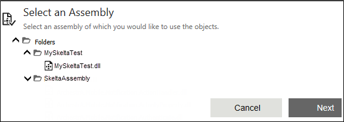
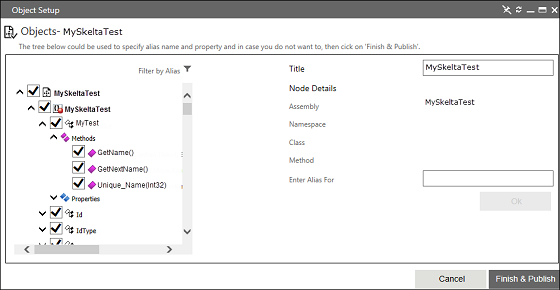
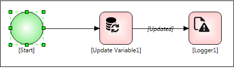
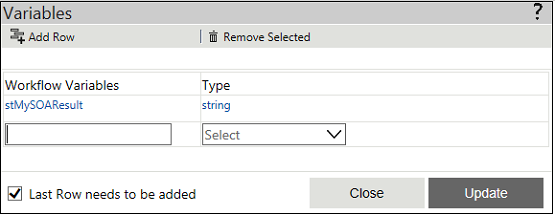
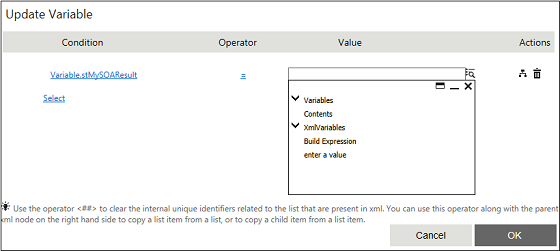
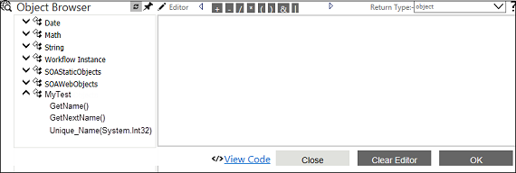
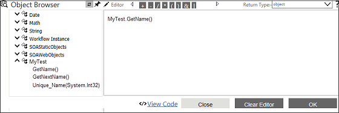
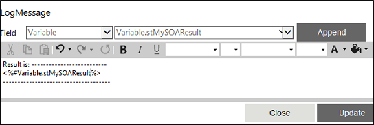

No
This example illustrates the use of SOA in a simple method in a .NET framework assembly
PROCEDURE
NAMESPACE USED
System
System.Collections.Generic
System.Text
Creating a New Project
Sample code to create the class
using System;
using System.Collections.Generic;
using System.Text;
namespace MySkeltaTest
{
public class MyTest
{
private int id;
public MyTest()
{
}
public MyTest(int inde)
{
id = inde;
}
public string GetName()
{
return "Welcome to Skelta SOA";
}
public string GetNextName()
{
return "Wonderful feature";
}
public string Unique_Name(int iID)
{
if (iID == 1return "Use WEB Service";
}
else if (iID == 2)
{
return "Access SQL Server data";
}
else if (iID == 1)
{
return "Access COM object";
}
else
return "What not";
}
}
}
Adding this folder in the SOA Folder option:
Adding Assembly into SOA Assembly Repository
After you select an assembly, you can browse through the namespaces, classes, and methods of the assembly. You can also provide an alias for the selected methods.


Note: By default, all the classes and methods are checked. If you do not want to use any particular class or method, then uncheck the class or method. However, the unchecked class will not be displayed in the Start Activity of the SOA Object Instance property. The unchecked class will be displayed in the Expression Editor of any activity, but the data will not be available.





